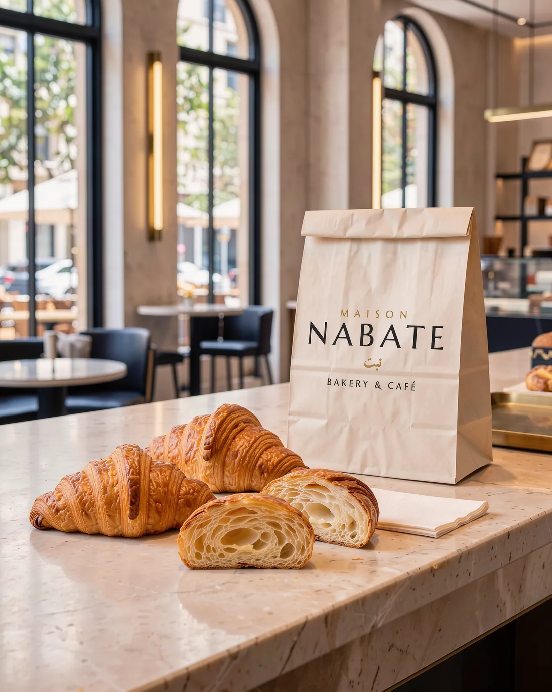
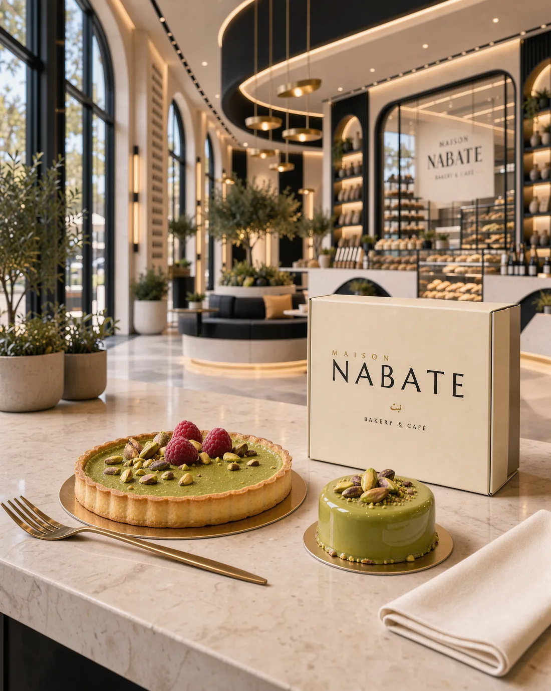
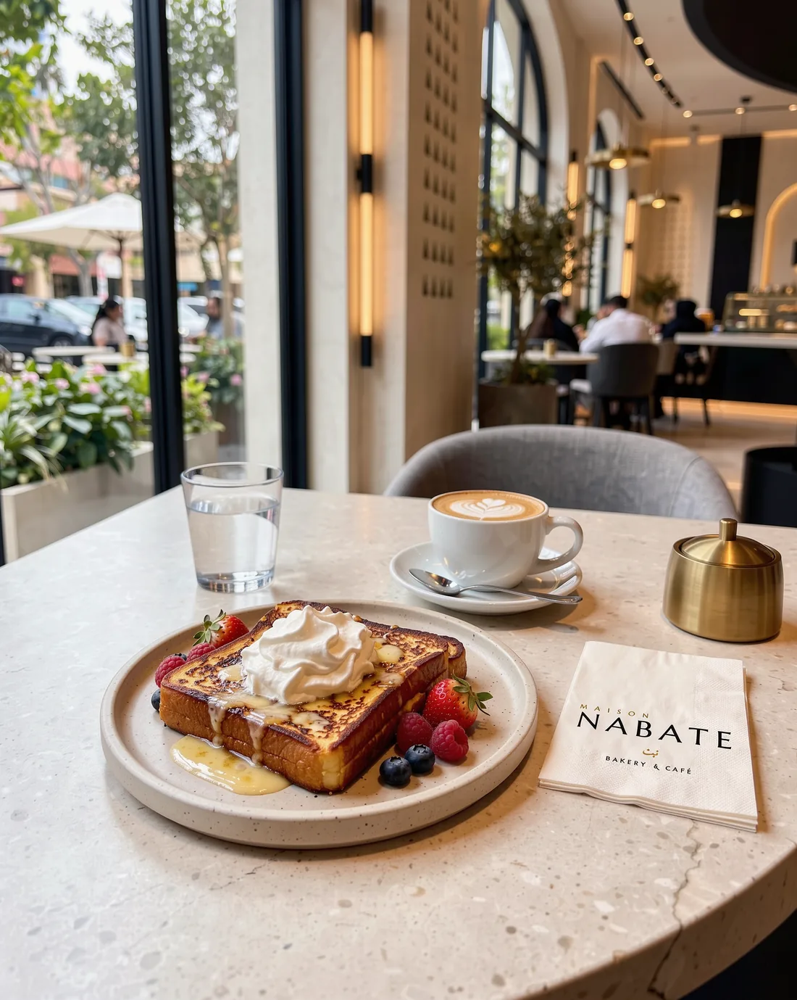

Essais photo — carte principale
3 images d'essai, même direction artistique, avec le logo Maison NABATE existant. À valider avant de lancer toute la carte.



3 images d'essai, même direction artistique, avec le logo Maison NABATE existant. À valider avant de lancer toute la carte.


